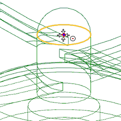
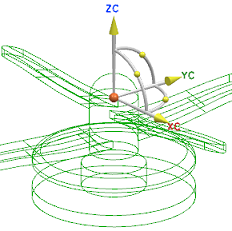
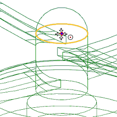
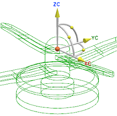

捕捉动态 WCS 到圆弧中心
-
在选择条上的捕捉点选项中，选择圆弧中心
 。
。现在选择被限制为只能选择此部件上的圆形边的圆弧中心以及端点。
-
将选择光标移动到旋转(8)最上方的圆形边处，如下图所示，然后点击选择圆弧中心。

WCS 将移动到圆弧中心点。

-
取消选择条上的圆弧中心
。
在选择条上的捕捉点选项中，选择圆弧中心 。
。
现在选择被限制为只能选择此部件上的圆形边的圆弧中心以及端点。
将选择光标移动到旋转(8)最上方的圆形边处，如下图所示，然后点击选择圆弧中心。

WCS 将移动到圆弧中心点。

取消选择条上的圆弧中心 。
。